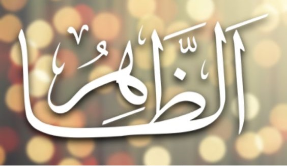

Görünür olan ez-Zâhir ve gizli olan el-Bâtın yine aynı ayette:
Dört ismin işaret ettiği dört tevhid sikkesini bir elma ağacında görelim: 1. Evvel: Ağacın bütün programını, daha ağaç yokken, bu çekirdeğin içine yazdı. 2. Ahir: Programı açtı, uyguladı, sonra tekrar meyvelerin içine latif bir şekilde dürüp koydu. 3. Zahir: Çekirdekte programı yazılı olan ağacı maddi aleme çıkartıp gösterdi. 4. Batın: Ağacın iç yapısında görülmeyen, ölçülmeyen, bilinmeyen nice unsur var... Kaynak: Risale-i Nur (Şualar)

Söz konusu âyet Cenâb-ı Hakk’ın bizzat evvel ve âhir, zâhir ve bâtın olduğunu beyan ederken O’nu tavsif eden dört temel kavramı karşıtlarıyla birlikte iki dizi halinde sıralamıştır. Aslında bu kavramlar yaratıklar için söz konusu edildiğinde onlar karşıtlardan sadece biriyle nitelenmiş olabilirler. Meselâ bir varlık evvel ise âhir olamaz, zâhir ise aynı zamanda bâtın vasfını taşıyamaz; aynı şekilde bir şey eğer azîm (büyük, yüce) ise latîf (ince, görülmez) olamaz. Halbuki Allah kendisini bu karşıt kavramlarla tavsif etmek suretiyle zâtına ait isim ve sıfatların yaratıklarınkine benzemediğini ifade etmiştir (Teʾvîlât).
Kaynak: İslam Ansiklopedisi